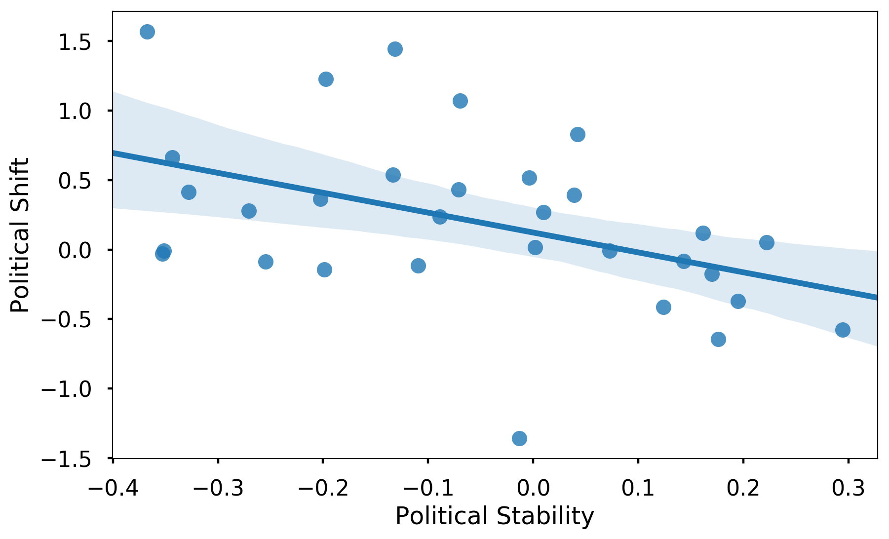
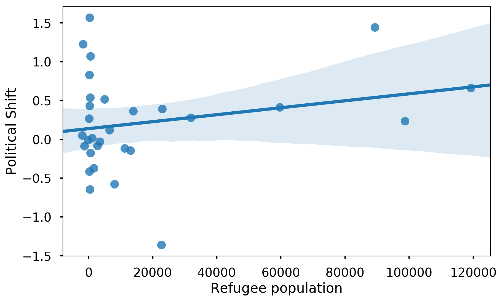
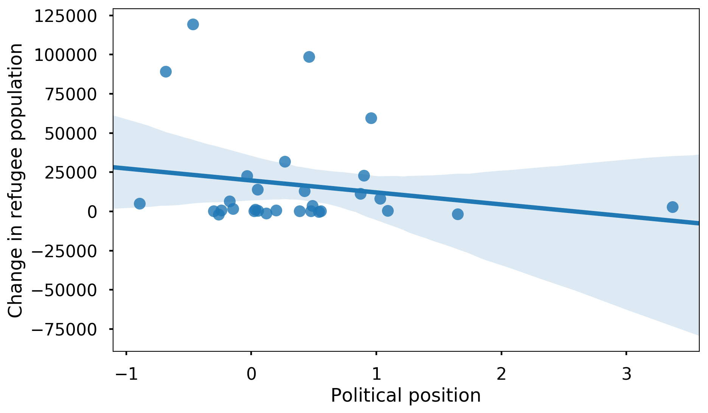
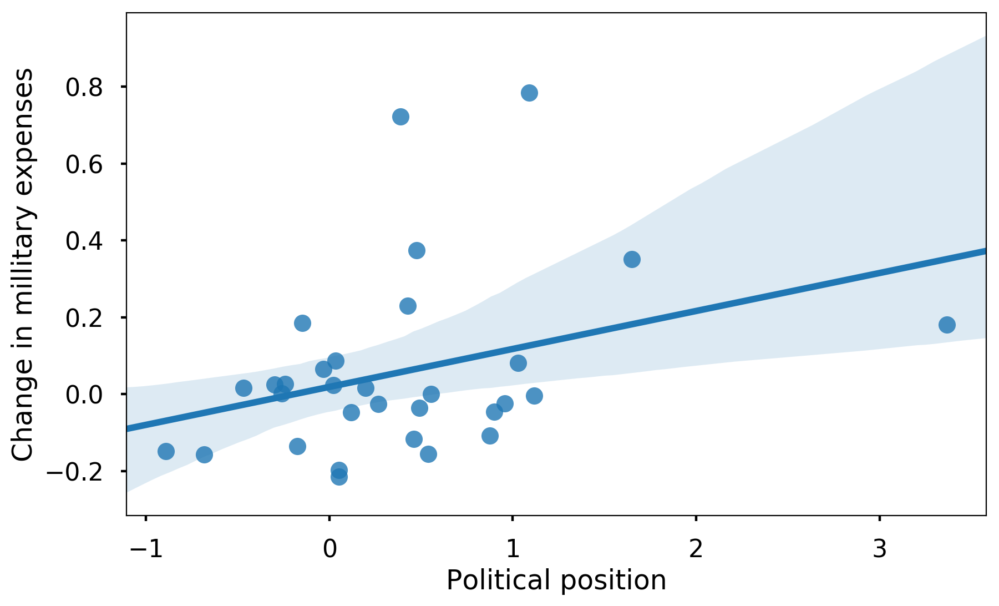
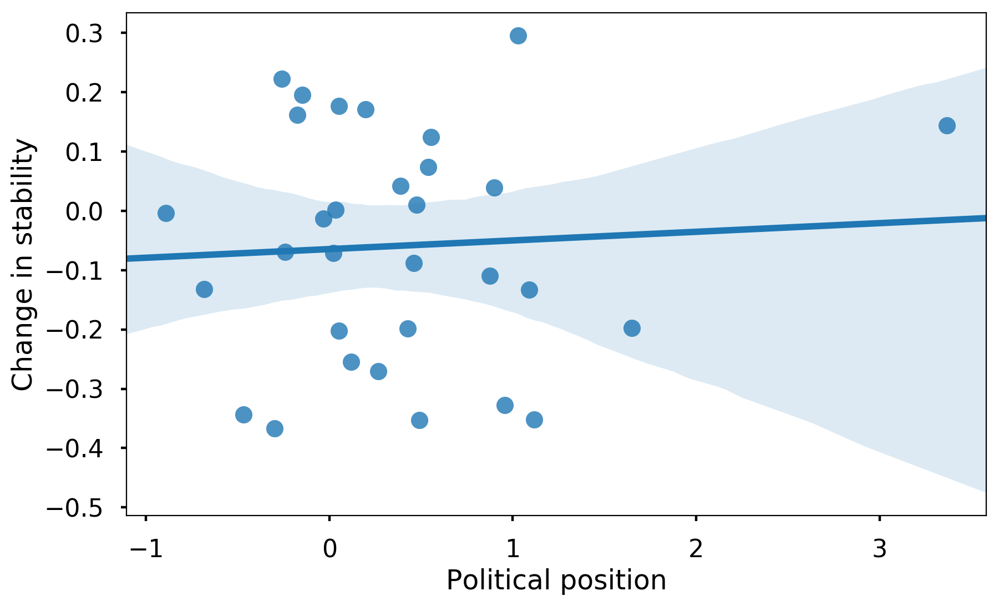
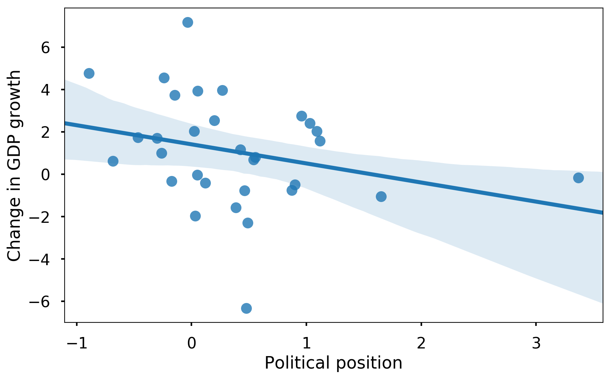
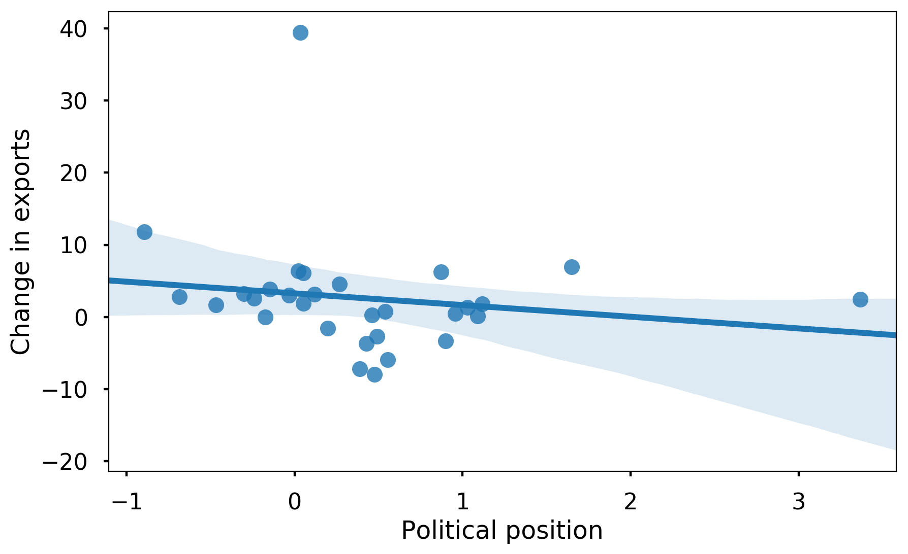
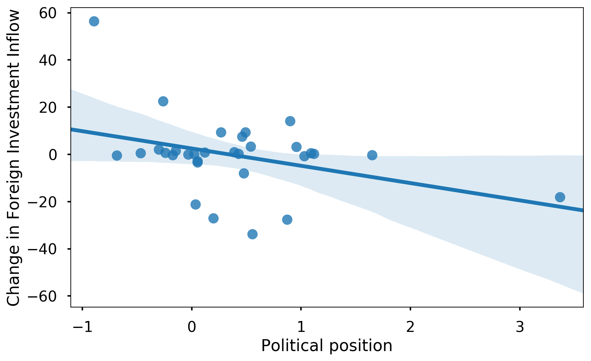

Introduction
The past several years have been characterized by a major shift in the political landscape of the western world. Ever since the election of Donald Trump as the 45th president of the United States of America, the popularity of far right-wing parties seems to be on the rise. Marginalized ever since the end of the Second World War, nationalist parties have made their comeback on the political map in the recent years. This phenomenon threatens to destroy the centre-left/centre-right duopoly that has dominated the European politics. More imprtantly, the strong rise of nationalism can threaten the existence of the European Union, as we have seen in the case of the Brexit referendum. The campaign for Brexit was mainly led by anti-EU nationalist parties, demanding control over their country’s borders, finance and political decisions. If this trend spreads across Europe we can see the demise of the European Union in the following years, most probably followed by the end of one of the longest peaceful periods in the history of the European continent. For this reason, we believe that it is very beneficial to systematically study the success of nationalistic parties across the members of the European Union, as well as the reasons and consequences of the shift in the ideology of the ruling parties.
Global success of political positions
Let us start investigating the success of the right-wing parties in the last national elections across the member countries of the European Economic Area (EEA). For this purpose, we have gathered the results of the last two elections in each member country. In our analysis, we are considering only the parties which have won seats in the national parliament because these are the only parties that have some political power on national and international level. In this section, we will take an aggregated look at the data, and observe the global trend across the European continent. In the first subsection, we are going to take a look at the shift in popularity of different political ideologies by observing the number of votes obtained by each ideology. In the second part, we will see whether there is a shift in the power dynamics of European politics by observing the number of seats won by parties with different ideologies. For this purpose, we have matched each party in our dataset with its political ideology ranging from far-left to far-right
Shift in popularity
The most illustrative factor of a popularity of a certain political position among the electorate is the number of votes gained by the parties representing that position. For this reason, in the following bar chart we present the aggregated number of votes won by different political positions across the EEA for each of the last two elections.

Looking at the visualization, we can draw several conclusions. First of all, we observe a decrease in the number of votes for centre-left and centre-right parties by over 10 million votes. Even though these two positions remain by far the most represented in the european parliaments, this sharp decrease is a sign of a possible collapse of centristic politics in EEA. Furthermore, we can see that the decrease is greater in the case of centre-left politics which is a potential indicator of the shift towards the right. This hypothesis is further supported by the sharp increase of votes for right-wing to far-right parties. With a gain of over 10 million votes, this position seems to be the biggest winner in the last elections across the European continent. However, we can also see a slight increase in the votes for the left-wing to far-left and centre-left to left-wing positions. From this, we can conclude that the european parliaments are getting more polarized, which is yet another indicator of the decline of centristic politics.
As we have seen from the previous analysis, we can see an increase in popularity on the both ends of the political spectrum. Consequently, we can not definetely conclude whether the popularity is shifting towards right-leaning politics, or it is just getting more polarized. For this reason, we aggregate the votes gained by left-leaning (all the positions from centre to centre-left to far-left), right-leaning (from centre to centre-right to far-right), and centristic positions (between centre and big-tent. We present the results in the bar plot below.

From here, we can clearly see an increase in popularity of centristic and right-leaning positions, and a decrease in the popularity of left-leaning positions. Thus, we can already conclude that the voters across Europe are shifting their votes towards right-wing parties. However, we are further interested in the shift of popularity of the far-right positions, as these parties are most commonly oriented towards populist, anti-european and extremely nationalistic politics. For this reason, we create yet another agreggation where we create groups for far-left positions (from left-wing to far-left), far-right positions (from right-wing to far-right) and centristic positions (everything in-between). We present the results in the following plot.

In this plot, we can see a decrease in both far-left and centristic positions, and an increase of votes for far-right positions. We finish this section with the conclusion that the popularity of right-leaning, and especially populist far-right political positions is increasing across the european contintent, and we turn our attention towards the question whether the increase of popularity has resulted in increase of political power of the nationalistic parties.
Shift in political power
As we have seen in the previous section, the right-leaning political positions are gaining popularity across Europe. However, this does not imply that they are also gaining political power, as the shift in number of votes might be concentrated in small number of countries, or might be influenced by the number of votes of the biggest member countries. For this reason, in this section we will analize the shift in the average percentage of seats won by the different political positions in the national parliaments. We use the same aggregating steps as in the previous section, starting from the average percentage of seats won by the different positions in the first plot.

In this plot we same the same trend, namely centre-left and centre-right parties seem to be losing power, and all positions right of centre-right are gaining seats. However, we can also observe that some positions on the far left side are also gaining seats, which once again indicates that the polarization of the electorate leads to polarized national parliaments.
We continue our analysis with the second aggregation step, namely grouping together left, right and center positions, as in the previous section. Once again, we observe a shift of the power to the right with left-leaning parties losing several percentage of seats, and center and right-leaning parties gaining seats. We can conclude that the political power in Europe is moving to the right.

Finally, we repeat the analysis with the aggregation of far-left, far-right, and centristic positions and display the results in the plot below. However, in this case we observe an increase of won seats in both far-left and far-right, and a decrease in the centristic positions. From this result, we can conclude that the parliaments are getting more radicalized and polarized. Nevertheless, the increase is much stronger in the case of far-right parties which once again shows us that the nationalist parties are gaining seats in the national parliaments, and are thus getting more powerful.

Success of political positions in different countries
In the previous section we have observed the shift in popularity and power of the political right across all countries member of EEA. We will now turn our attention towards the political situation in different countries. We want to investigate which countries are most left or right leaning, as well as observe which countries have made the biggest shift towards either side of the political spectrum. For this purpose, we have assigned values from -6 to +6 to each political position. The assigned values are given in the following table.
| Position | Scale |
|---|---|
| far-left | -6 |
| left-wing to far-left | -5 |
| left-wing | -4 |
| centre-left to left-wing | -3 |
| centre-left | -2 |
| centre to centre-left | -1 |
| centre | 0 |
| syncretic | 0 |
| big tent | 0 |
| centre to centre-right | 1 |
| centre-right | 2 |
| centre-right to right-wing | 3 |
| right-wing | 4 |
| right-wing to far-right | 5 |
| far-right | 6 |
Next, we calculate the average position of the national Parliament of the country by weighing the position of each the parties in the parliament by the percentage of seats won by that party. In the end we sum the contribution of each parlaimentary party in order to gain an average position of the country’s Parliament. In this way, each country is assigned a value between -6 and 6, with negative values representing left-leaning countries and positive values representing right-leaning countries. The positions of the Parliaments from the last elections are represented in the figure below.

From this figure, we can see that for example Hungary is the most right-leaning country in the EEA, and Greece is the most left-leaning one. We can also observe that most countries in the EEA have right leaning parliaments, which further supports the obervations from the previous section. We are big map lovers, so we plot the same data on the map of Europe below, to observe whether there is some spatial correlation in the data.
Indeed, we can see that eastern European countries are the most right-leaning countries in Europe. On the other hand, western countries have more moderate governments. Interestingly, Scandinavian countries which are considered one of the most liberal ones, have slighlty right-leaning Parliaments. Finally, we can see that Mediterranean countries, with the exception of Italy, are mostly left-leaning. In this way, we show the the geographical position of a country is a strong indicator of its political position, posssibly because of the geopolitical factors influencing the political landscape.
Apart from the current situation, we are also interested in which countries have made the biggest shift in political power between the last two elections. For this reason we calculate the difference in average position of the parliaments between the two elections, and present the results in the following plot.

Here, we see that Greece has made the biggest shift to the left, and Slovakia has made the biggest shift to the right. Another interesting observation is that Hungary, which has the most right leaning parliament has actually made a shift towards the left, which means that prior to the last election, the Parliament was even further to the right. Once again, we plot the same data on the map of Europe to look for some spatial correlation.
Once again, we see an interesting spatial dimension of our data. We can observe that countries from Southern and Northern Europe have made a shift towards the left, and countries from Eastern and Central Europe have mainly made a shift to the right. From the previous analysis, we can conclude that the geographical position of a country, and the elections in neighbouring countries can be strong indicators of election results.
Causes of political shift
In the previous sections we have seen that there is indeed a shift in the political power towards right-leaning parties across the European continent. In this section, we would like to investigate what are the main causes of this shift. For this purpose, we used the weighted difference in seats defined in the previous section. We tested the correlation between this difference and a number of World Development Indicators obtained from the The World Bank Data initiative. For this reason, we observe the difference in the value of the indicator at the year of the first and second election to observe whether the change in the indicator has any effect in the change of the political position of a country’s Parliament.
By far the strongest correleation we have found is with the indicator ‘Political Stability and Absence of Violence/Terrorism’ (Spearman coefficient of -0.49), shown in the figure below. In this figure, the x axis represents the change in the political stability between the two elections, and the y axis represent the shift in political power. This means that country’s with decreased stability and increased violence and terrorism are the ones that shift most to the right. In this way, we show that the terrorist attacks in recent years have been one of the main contributors to the rise of nationalism across Europe.

However, a very interesting observation is that we have not found a correlation between an increase in number of refgees and the shift in political power. We show this analysis in the plot below, and note that the Spearman coefficient between these two variables is 0.03, indicating almost complete independence. Thus, we show that the popular belief that the increase in number of refugees leads to shift towards nationalist parties is not supported by our data.

We have not found any other strong or meaningful correlation with some indicator. Thus, we can conclude that the refugee migrant crisis in recent years has not caused a massive shift in power, but the recent terrorist attacks and reduced stabillity might be one of the main causes of the observed shift in the political landscape.
Difference in governing
After observing the potential cause of shift in political power, let us examine the difference in governing between right and left leaning governments. The main claim of populist right-leaning movements in recent years is that they want to overthrow elitist governments and improve the overall quality of life for everyday people. In order to investigate these claims, we decided to compare the performance of right and left leaning parliaments in regards to several indicators obtained from the The World Bank Data initiative. For this reason, we observe the difference in the value of the indicator at the beggining and at the end of the mandate of a certain Parliament to see whether the wighted political position of the Parliament has any effect on the indicator of interest.
As one of the main arguments of populist movements is the prevention of out-of-control immigration, let us first observe whether right-leaning countries do indeed allow less immigrants to cross their borders. In the following figure, the x axis represents the average position of the country’s parliament in the years between the two elections, and the y axis shows the difference in the number of refugees allowed in the years of the two elections. In this way, we can investigate whether the laws and policies proposed by right leaning parliaments lead to a decrease in number of refugees at the end of their mandate.

As we can see, there is no significant correlation between the political position of the country and the change in number of refugees. This is further supported by observing the Spearman coefficient value of -0.09 which indicates no meaningful relationship between these two variables. With this analysis, we show that one of the main arguments of nationalist parties is invalid, and that right-leaning countries do not allow less immigrants in their countries than their left-leaning counterparts.
Another big topic for populist movements is the safety and security of the country. Nationalist parties claim that their politics of closed borders and focus on strong millitary and police forces will lead to safer society and less violence. Indeed, as we can see in the following plot which demonstrates the relationship between the country’s position and millitary expenditure as a percent of GDP, right-leaning parties do spend a higher percentage of their GDP on millitary forces (with a Spearman coefficient of 0.24).

However, when we observe the relationship between the country’s political position and the ‘Political Stability and Absence of Violence/Terrorism’ indicator (shown in the figure below), we can see no correlation between the country’s position and its safety (Spearman coefficient of -0.02). From this analysis, we can conclude that although right-leaning parties invest more in millitary forces, this does not result in safer society and less violence. With this, we debunk yet another argument of populist movements - nationalist policies do not correspond to safer countries.

Finally, let us observe the effect of the political positions on the economy of a country. As a representative of the economic situation of a country we choose the growth in the GDP per capita. As we can see below, there is a slight negative correlation between the political position and GDP growth (Spearman coefficient of -0.32). This means that right-leaning countries have a smaller growth than left-leaning countries. Even though this correlations is not very strong, it is definitely contradictory to the claim that nationalist policies lead to stronger economy and prosperity.

On the contrary, we can say that exactly the inward oriented politics and international isolationism of nationalist parties are directly contributing to decreased growth in GDP. We support this claim by looking at the negative correlation between the political orientation and the exports of goods and services in the figure below (Spearman coefficient of -0.33). One possible interpretation of these results is that nationalism and isolationism lead to decreased exports, and are thus one of the main reasons for decreased growth in GDP.

Yet another indicator of the fact that reduced cooperation with the world adopted by nationalist governments is the main factor of decrease in economic growth can be ovserved in the plot below. Here, we show the negative correlation between inflow of Foreign Direct Investment and the political position of the Parliament (Spearman coefficient of -0.2). We can see that foreign investors invest less in right-leaning countries potentially because of the closed politics and nationalist policies implemented by the nationalist governments.

GDELT Analysis
After examining the main causes and consequences of the rise of popularity of right-wing parties, we analyze the main charateristics of right-wing governments and compare them to centrist governments. The GDELT dataset contains events between two actors extracted from news around the world. For our analysis, we use only the events in which one of the actors is a country from EEA. The idea is to gain an insight into the style of governing of right-wing parties by observing relevant features from the GDELT dataset, such as the average tone, Goldstein Scale and occurences of different event types in the news mentioning different governments.
Average Tone
The ‘Average Tone’ feature presents a quantification of the nature of each event (-100 denotes an extremely negative event and +100 an extremely positive one). The average tone of actions performed by a given government gives us an insight into their attitude towards other actors, as well as specific internal or foreign affairs. Since we are going to compare governments based on the average tone, we show as reference the average tone for external and internal events for all EEA countries in the last 3 years.

We can observe that the average tone is negative for every year, with 2015 and 2016 having the lowest average tone, which could be explained by the by the outbreak of the refugee crisis in 2015. The average tone increases in 2017, which means that there is an improvement in both internal and external relationships in the EEA countries. Furthermore, we can see that the average tone for internal and external events is very similar in 2015 and 2016. However, the average tone for external events is higher in 2017, meaning that governments have a more positive attitude towards foreign than internal affairs. From all of this, we can conclude that there is an improvement in the international relationships in 2017, which is a promising observation for the stability of the region.
We are interested to see whether the ideology of the government implies a specific attitude towards external and internal events. Therefore, we plot the average tone of each EEA government and color each bar depending on the ideology of that government, with higher color intensity depicting a bigger lean towards left/right.

Although it is hard to draw a general conclusion from the plot, we can make a few observations. We can see that right-wing governments such as Belgium, Austria, Germany and Hungary have the lowest average tone and left-wing governments such as Portugal, Cyprus, Malta have one of the highest average tones. The exceptions to this trend are the Baltic governments which have the best average tone despite being right-wing and Greece which has a fairly low average tone despite having a left-wing government. The case of Greece is a bit of an outlier since the last elections in this country were in 2014, which was before the beginning of the migrant crisis. On the other hand, Greece was one of the most affected countries by the immigrant waves, which might explain the low average tone.
Relationship between governments
We have seen the average tone of each government in the previous section, but that doesn’t provide us with an information on the relationship between specific governments and whether a difference in idelogies implies a worse relationship. In this part, we examine the governments that have the best and worst relationships by observing the average tone of shared events by pairs of governments.
The first plot shows the governments with the worst relationship, manifested by the lowest average tone of the events between those countries.

We can see from the plot that Belgium and France have the lowest average tone. The reason why there are two entries in the plot is that the label (BEL,FRA) represents actions performed by Belgium on France and vice versa. What is interesting to see is that almost all of the countries in the plot are neighboring countries, so one of the reasons for the low average tone might be the unresolved issues and traditional rivalries of neighboring European countries. However, we can also observe that some of these country pairs have governments with different ideologies, such as France (centrist) and Belgium (right-wing), Spain(centrist) and Germany(right-wing). Furthermore, in every pair with the exception of Spain-France, at least one of the governments is right-wing, which further confirms the hypothesis that righ-wing governments have a more negative approach towards other governments.
The second plot shows the countries with the highest average tone of shared events.

We can see from the plot that Great Britain has a very “friendly” approach towards the smaller EEA countries. Contrary to the previous plot which was dominated by right-wing governments, we can see that most of the countries in this plot have centrist(Great Britain, Luxembourg, Ireland)or left-wing governments (Portugal, Cyprus). Furthermore, most of the country pairs have governments with the same ideology, which implies that governments that share the same ideology have a better relationship. An exception to this observation is the relationship between Great Britain and Germany, which despite having governments of different ideologies, have a significantly better relationship compared to the other big Western European countries.
Relationship with the Trump Administration
The biggest indicator or even instigator of the global rise in popularity of populist right parties was the election of Donald Trump, which has further polarized the political scene in Europe. Therefore, we analyze whether the ideology of the government defines the relationship between that country and the Trump administration by examining the average tone of events between the governments of each EEA country and the US government.
In the next plot, we show a map of the average tone of each government and the Trump Administration.
From the map, we can see that the governments of the Baltic countries have the highest average tone, which is not surprising considering the fact that all these governments are composed of right leaning parties. We can see that balanced countries with governments composed of centrist parties (Malta, Iceland and Great Britain) have the lowest average tone (worst relationship) with the Trump Administration. It is evident that only right-leaning governments have relatively good relationships with the Trump Administration with the only exceptions being Greece and Cyprus. However, we cannot jump to the conclusion that right leaning governments have good relationships with the Trump because the governments of Poland, Italy, Sweden, Belgium, although right-wing, have a relatively low average tone. Overall, we can see that the majority of governments of the European countries have a negative tone towards the USA after the election of Donald Trump.
The previous map only shows the average tone of events in 2017 (after Trump got elected) and doesn’t take into account the realtionship between the country and the USA prior to 2017. Therefore, in order to observe the change in the relationships between each country and the USA after Trump was elected, we observe the difference in the average tone between each government and the US administration before (2015 and 2016) and after (2017) Trump got elected. The color of the plots represents the weighted political position of the country’s Parliament.

We can see that centrist and left-wing governments have the biggest negative change, with Estonia, Poland, Italy and the Czech Republic being exceptions. On the contrary, we can see that only right-wing governments have improved the relationship with the US government, with the exception of Ireland and Greece. However, the case of Greece is an outlier because of the reasons discussed above.
It is important to state that we cannot jump to conclusions with these results because the overall average tone in the year 2015 is a lot lower than 2017, mostly due to the outbreak of the refugee crisis in 2015. Therefore, an improvement in the average tone does not necessarily mean that the country has an improved relationship with the Trump Administration.
Taking everything into account, we can see from the plots above that right-wing governments tend to be more “friendly” towards the Trump Administration compared to centrist and left-leaning governments.
Event types
In order to analyze the behavior of right-leaning governments, we observe the type of actions (events) that these governments perform. The GDELT dataset categorizes each event into a different event type with a large number of subtypes. We show a plot of the weighted count (number of events of that type divided by the total number of events) of each event type for all EEA countries combined. The bars are colored depending on whether the event type is positive or negative.

We can see that positive types related to cooperation are more present in the dataset, which is expected because all the countries are members of the EEA, which promotes cooperation. However, we can see a relatively big occurence of the event Disapprove which illustrates the polarization of the European countries.
Our idea is to compare right-wing governments and centrist governments. Therefore we split the EEA countries into two groups depending on their ideology and compare the occurences of specific events for both groups.

We can see a couple of differences between the two groups. The first three event types show that centrist governments are more open to cooperation, both diplomatic and material. Furthermore, centrist governments are more willing to provide aid to internal and external entities. We can conclude that, in terms of cooperation and providing aid, right-wing governments are much more closed and reserved.
The second difference is the type Exhibit force posture, which consists of events like Demonstrate military or police power, Increase police alert status and Mobilize or increase police power. We can see that the weighted count of this event type for right-wing governments is twice as big as centrist governments, meaning that right-leaning governments have a higher tendency to exhibit power and use of police and armed forces.
The third difference is with regard to the event type Fight which refers to the use of conventional military force. Centrist governments have a higher weighted count which could be explained by the fact that large centrist-governed countries like Great Britain and France are more involved in external military operations.
Conclusion
In summary, we can say that the popularity and power of populist right-wing movements seems to be on the rise across the members of the EEA. We have shown that the decrease in political stabillity and the number of terrorist attacks in recent years seem to be the biggest cause of this trend. Furthermote, we have debunked some of the false claims of nationalist parties. We have shown that nationalist policies do not necessarily reduce the number of refugees or increase the safety of the society. We have also seen that international isolation of conservative countries might cause a decrease in the growth of the country’s GDP. We have supported this by observing that nationalist governments export less goods and services, and are less attractive for foreign investors. FInally, we have seen some important differences in the news events related to centristic and right-leaning countries. We have shown that nationalist governments are less interested in providing aid, and more likely to exhibit force both on international level, and within their own countries.